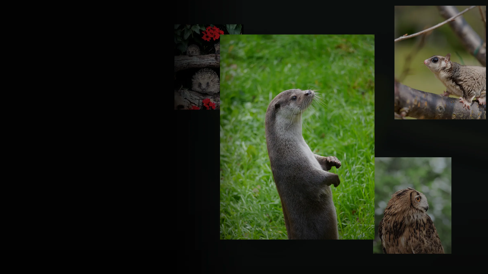

動物好きのためのやさしい科学コミュニケーション
もしもあなたが、カフェのどうぶつだったら？
この診断は、回答に応じて結果カードを表示するためJavaScriptを使用します。ニックネームは送信・保存されません。
本ページは、北海道大学獣医学部法獣医学分野による学祭向けの教育・啓発企画です。 特定の店舗・事業者・個人を指弾する目的ではありません。
掲載内容は、公開情報・学術文献・公的機関の情報に基づき、野生動物の生態、動物福祉、 野生動物取引、感染症リスクについて一般向けに解説するものです。 個別施設の適法性、飼養状態、動物の由来を判断するものではありません。
公開前に、企画側で利用文献・公的機関情報を確認し、必要に応じて追記してください。